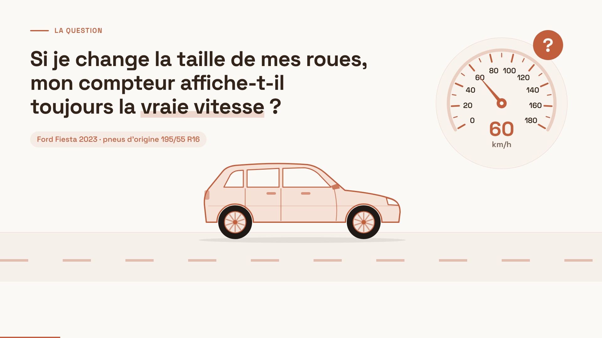
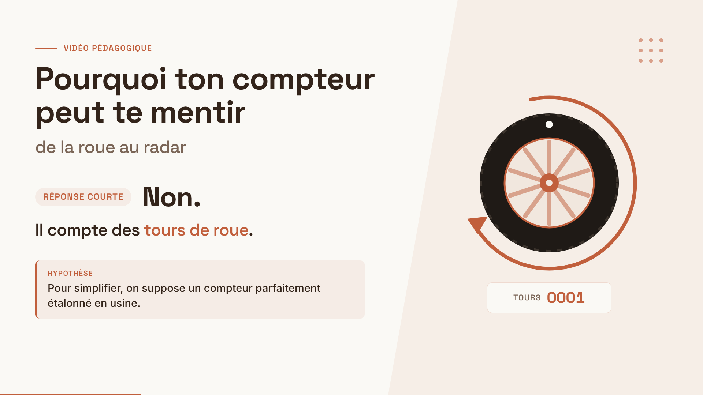
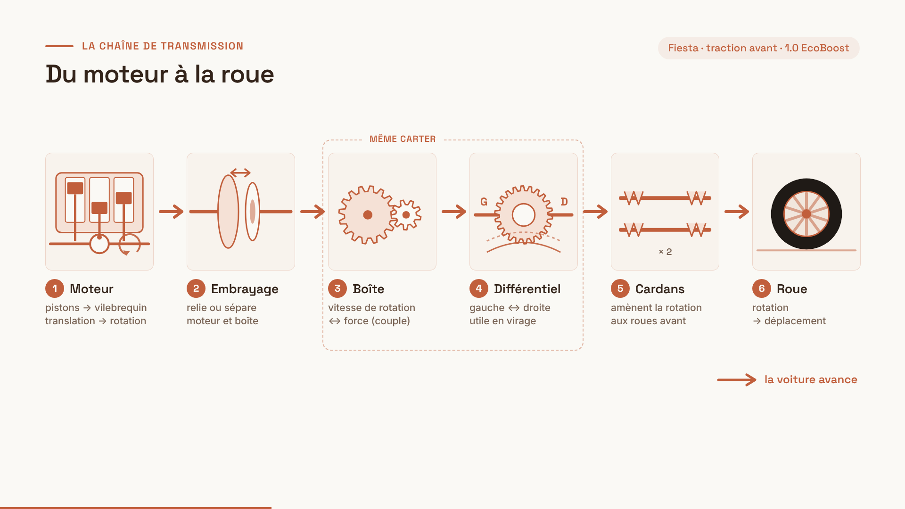
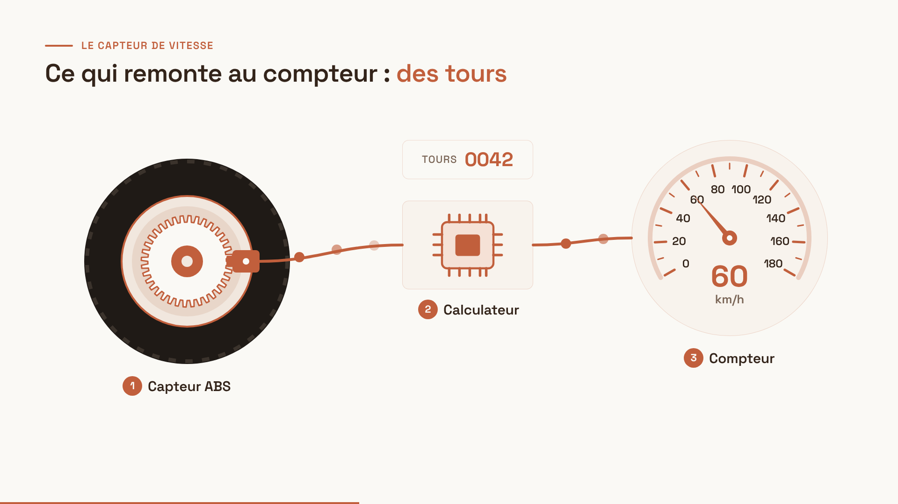
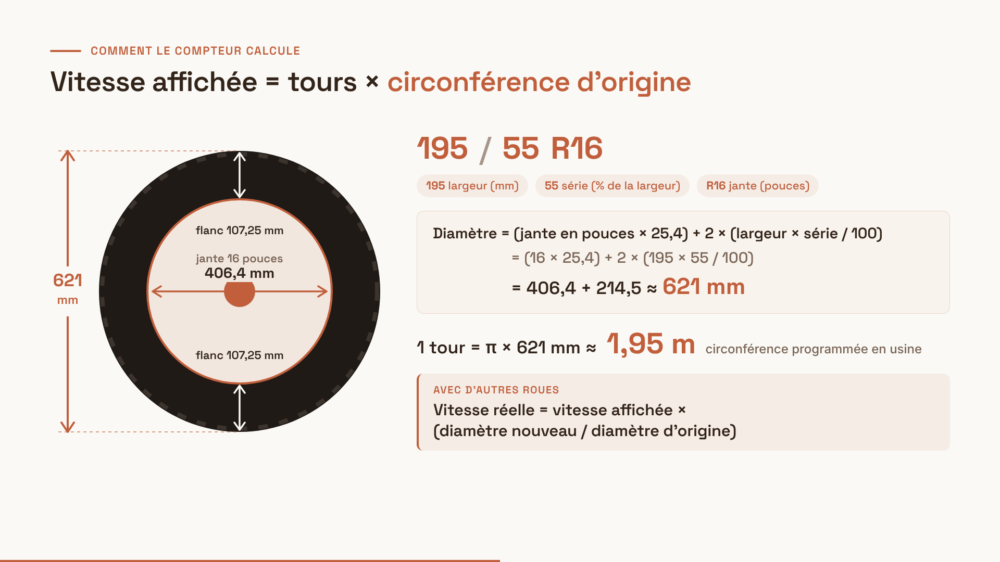
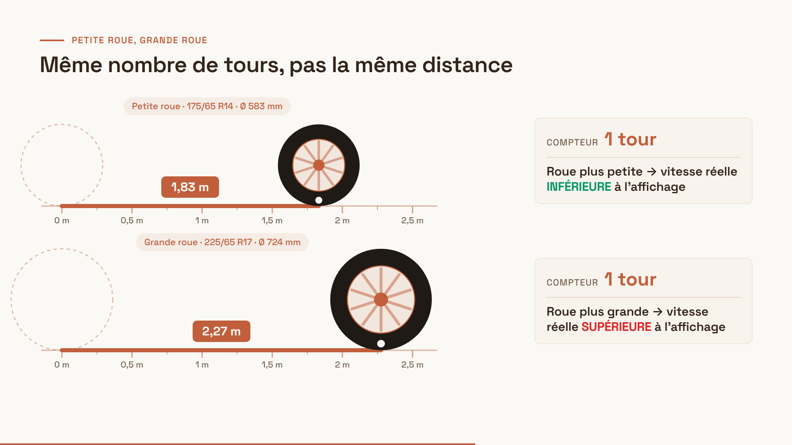
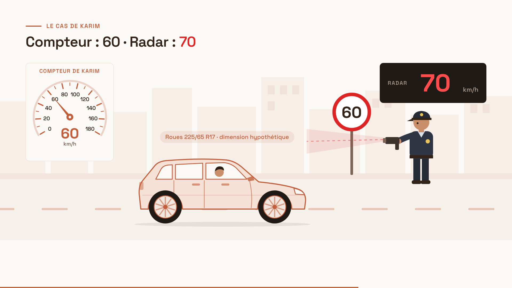
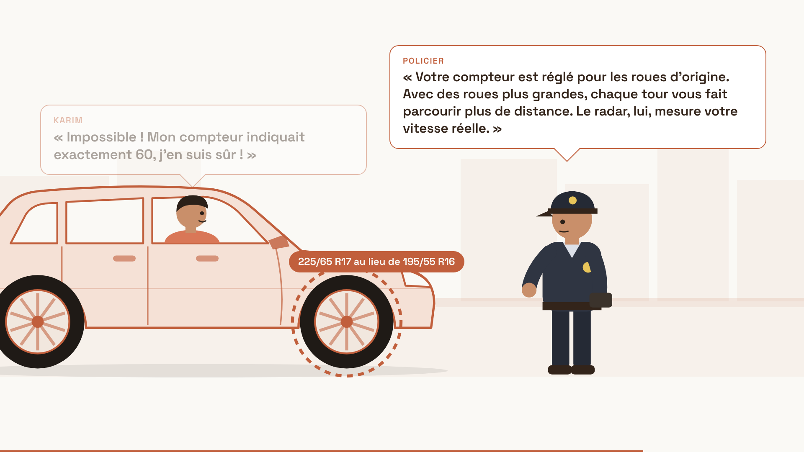
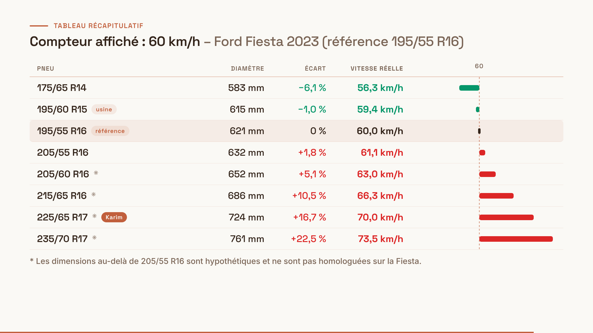
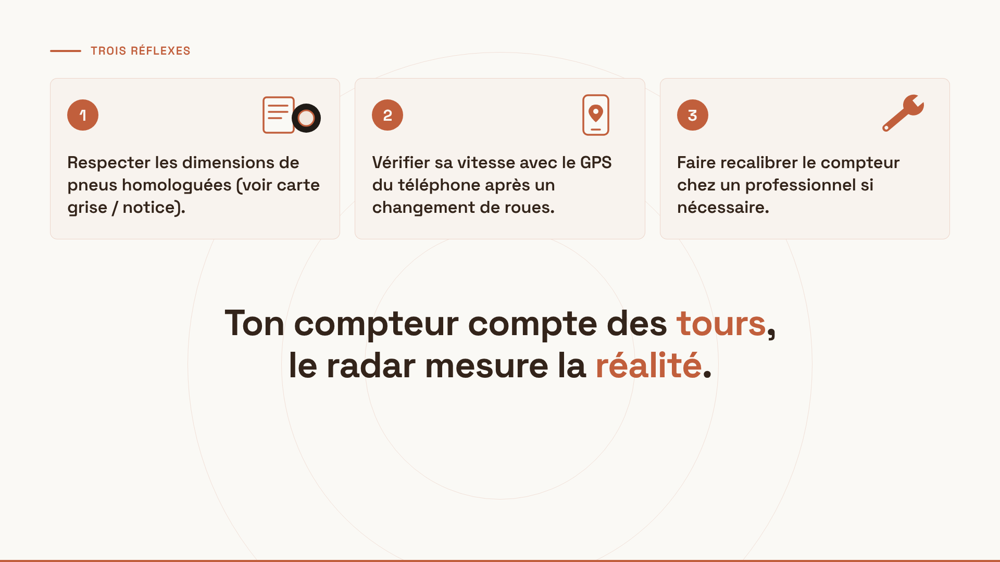

La Fiesta roule ; la question du brief s’écrit à l’écran, « vraie vitesse » surlignée ; compteur sur 60.

Titre, « Non. », « Il compte des tours de roue » et le bandeau Hypothèse ; une roue tourne, compteur de tours.

Six étapes en vue éclatée ; chaque flèche s’allume quand la voix nomme l’étape ; boîte + différentiel dans le même carter.

Couronne dentée + capteur ABS → impulsions → calculateur → compteur.

Code 195/55 R16 décodé, formule du diamètre remplie (621 mm), 1 tour ≈ 1,95 m, formule de la vitesse réelle.

Chaque roue fait 1 tour sur la règle : 1,83 m contre 2,27 m ; le compteur dit « 1 tour » pour les deux.

Panneau 60, Fiesta en 225/65 R17, compteur sur 60, radar du policier sur 70.

Les trois répliques en bulles, mot pour mot ; la roue de Karim entourée à la fin.

Les 8 lignes arrivent une par une ; au-dessus de 60 en rouge, en dessous en vert ; ligne de Karim marquée ; note en bas.

Les trois conseils, puis la phrase finale seule.